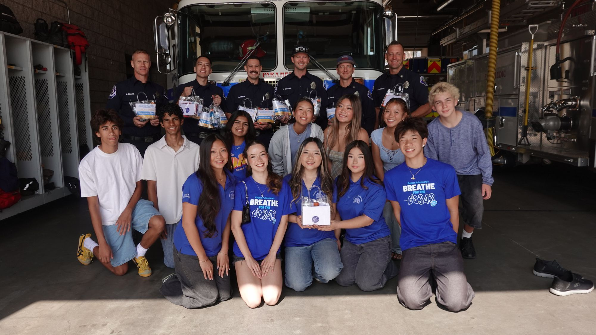
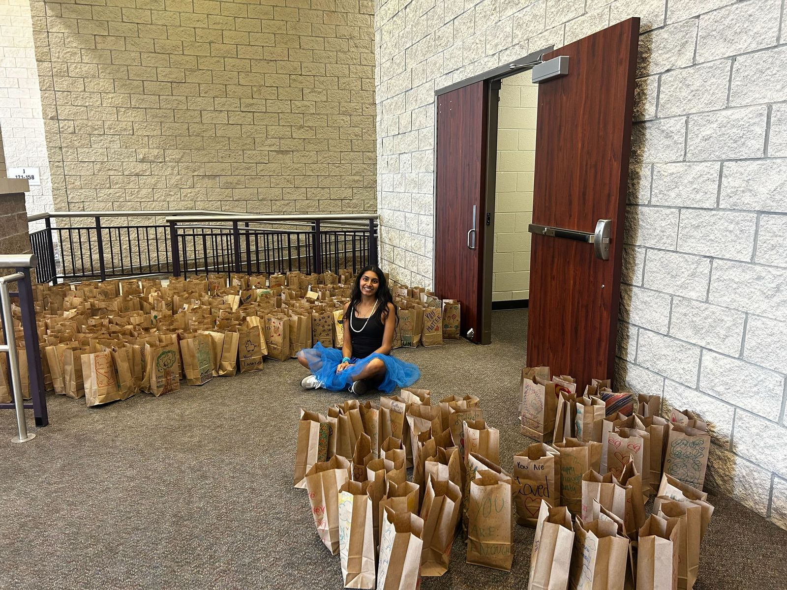
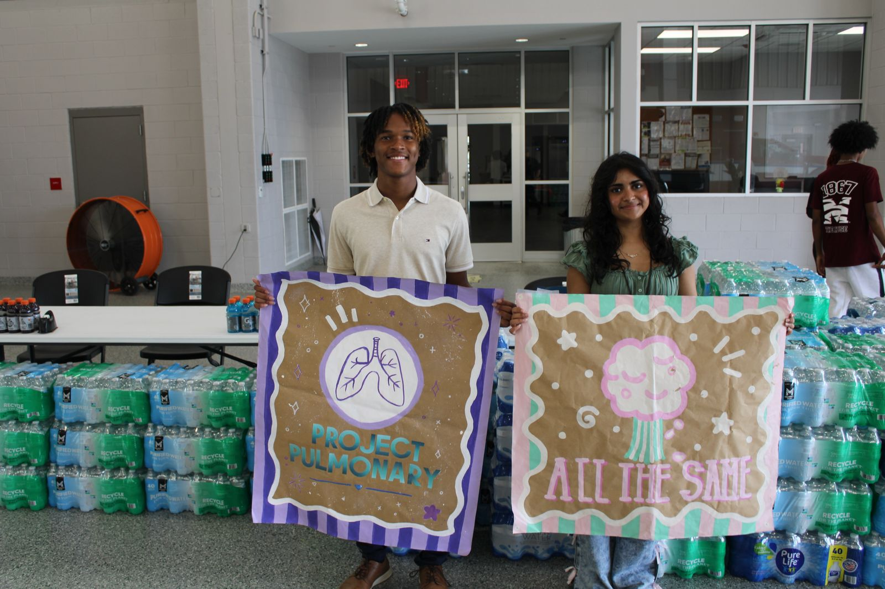
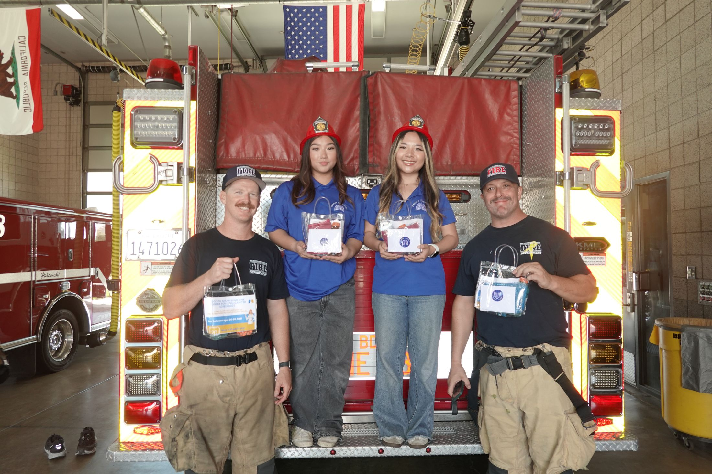

Get involved
Get Involved
Join a chapter, start one at your school, or apply for the national team.
How a drive works
How Drives Work

01
Collect
Chapters run school and community drives for water, electrolytes, and care items.

02
Deliver
Students hand supplies directly to the crew on shift, station by station.

03
Remind
Every delivery carries handwritten Letters4Lungs with a screening reminder.

Chapters
What Chapter Members Do
- Run hydration drives and deliver them to local stations
- Lead Letters4Lungs in K–8 classrooms
- Represent Project Pulmonary at school and community events
- Build partnerships that keep firefighter health visible
National team
Apply for a Leadership Role
Our national team is student-run. Each track has its own application.
FAQ
Common Questions
About Project Pulmonary
What does Project Pulmonary do?
Project Pulmonary is a youth-led 501(c)(3) nonprofit that protects firefighters from wildfire carcinogens through three initiatives: prevention (hydration and recovery resources, plus education on occupational carcinogen exposure), pulmonary rehabilitation (detoxification saunas, PPE washers, and cold plunges for fire stations), and policy advocacy (policy briefs and bills for stronger health protections).
Why focus on firefighters and wildfire smoke?
Wildfire smoke contains carcinogens linked to lung cancer and other respiratory diseases, and firefighters breathe it in again and again. Most public attention goes to the visible destruction of a wildfire, so this invisible health risk gets far less attention. As wildfires grow, so does the exposure.
Who started Project Pulmonary, and who runs it?
High school students founded Project Pulmonary in response to the January 2025 Palisades Fire. It is still run entirely by students: thousands of volunteers across 200+ chapters in 40+ countries, led by a student national team.
What has Project Pulmonary accomplished so far?
We have collected and donated 100,000+ hydration items, secured $65,000+ in funding for firefighter rehabilitation and wellness resources, and delivered 10,000+ Letters4Lungs to first responders. We have worked with the offices of Congresswoman Judy Chu, Congressman Pete Aguilar, and San Bernardino County Supervisor Jesse Armendarez on firefighter health policy, and our work has been featured on KTLA, FOX, ABC, Spectrum News, CBS News, and a Times Square billboard.
How are donations used, and are they tax-deductible?
Donations fund hydration and recovery resources for fire stations, rehabilitation equipment like detox saunas, Letters4Lungs, and chapter growth. Project Pulmonary is a registered 501(c)(3), so gifts are tax-deductible to the extent allowed by law.
Getting Involved
How do I start or join a chapter?
Fill out the chapter application. Our national team will follow up with next steps and a starter plan for your first drive. If there is no chapter near you, you can start one at your school.
Do I need a medical or healthcare background to join?
No. Most of our members are high school students with no healthcare experience. You will learn about firefighter lung health as you go, and our Research & Medical Affairs team handles the science.
Can I earn volunteer hours?
Yes. Your chapter tracks attendance at every event. For verification forms or letters for school or service awards, ask your chapter president, or email projectpulmonary@gmail.com if you volunteered outside a chapter.
How do I join the national leadership team?
Apply for a national role: Executive Board, Graphic Designer, Research & Medical Affairs, Governmental Affairs, or Community Outreach. Each has its own application on the Get Involved page.
What if I can't start a chapter right now?
You can still help: organize a hydration drive, write Letters4Lungs, share Project Pulmonary on social media, or connect us with local fire departments. If your school has not approved a chapter yet, reach out and we will share materials to help you make the case.
Supported by
Backed and Funded By


Partners and sponsors